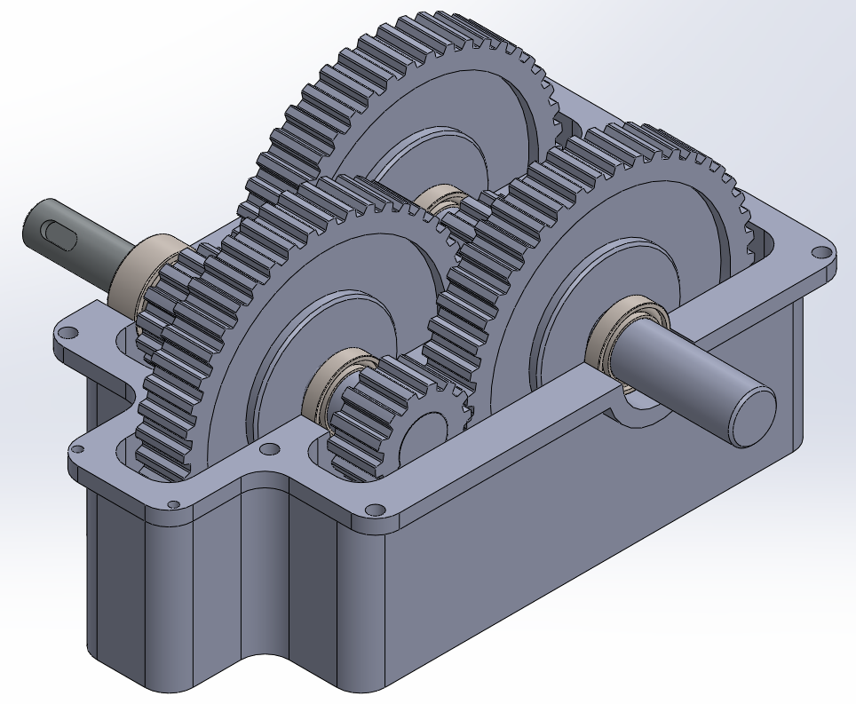
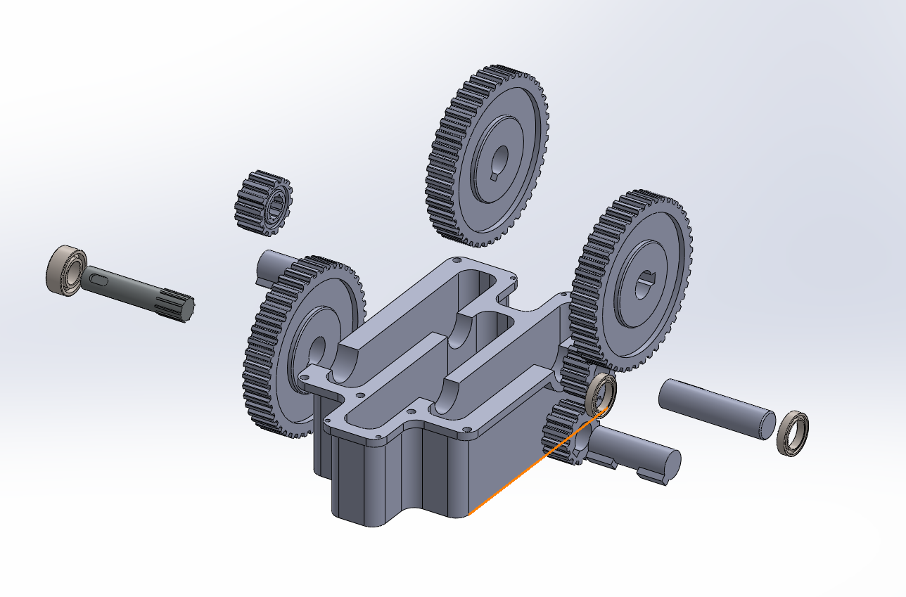

PROJECT 02
Multi-Stage Gearbox Assembly
SolidWorks modelling and assembly project exploring spur-gear transmission, shafts, bearings, component relationships and mechanical motion within a multi-stage gearbox.
Functional and exploded animation of the completed gearbox assembly
Project Views

Assembled gearbox showing gear train layout inside the housing

Exploded view showing the housing, shafts, gears and bearings
Overview
Modelled and assembled a multi-stage spur gearbox in SolidWorks, incorporating a gearbox housing, multiple gear pairs, input, intermediate and output shafts, bearings and retaining components.
The completed assembly was configured to demonstrate both the interaction of the gear train during operation and the relationship between individual components through an exploded animation.
Modelling Process
Gearbox Housing
Constructed the main gearbox casing using extruded profiles, cuts and filleted geometry, creating the internal space and shaft locations required by the transmission components.
Gears
Modelled the spur gears as individual components and positioned the gear pairs to establish the successive transmission stages within the housing.
Shafts & Bearings
Created the input, intermediate and output shafts, including the geometry required to locate the gears and associated components. Bearings were positioned at the shaft supports within the housing.
Assembly
Combined the individual components within the SolidWorks assembly environment using concentric, coincident and mechanical relationships to constrain the transmission while preserving the required rotational movement.
Mechanical Motion
Configured the assembly so that rotation of the transmission could be visualised, showing the interaction between meshing gears and the resulting motion through the gearbox stages.
Exploded Animation
Created a multi-step exploded configuration to separate the gears, shafts, bearings and housing. The configuration was then converted into a SolidWorks animation to demonstrate the assembly structure and component relationships.
Technical Work
- Multi-component parametric modelling
- Spur-gear transmission assembly
- Input, intermediate and output shaft modelling
- Bearing and shaft positioning
- Mechanical and standard assembly mates
- Rotational motion visualisation
- Multi-step exploded configuration
- Motion Study animation and video export